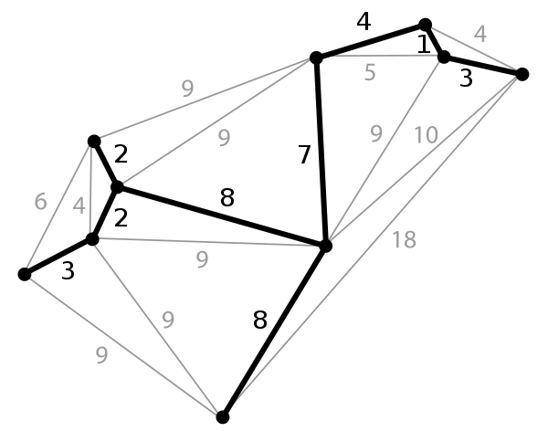

Introduction
MST (Minimum spanning Tree): a subset of the edges of a connected, edge-weighted undirected graph that connects all the vertices together, without any cycles and with the minimum possible total edge weight.
- connected and undirected graph: an undirected graph in a single connected component
- a subset of edges connects all the vertices: choosing a set of edges from the graph that can connect all vertices
- spanning tree: the selected set of edges does not form a cycle because it should be a tree.
- minimum: there may exist multiple spanning trees. The minimum spinning tree's summation of its edges' weights has the minimum value among all the spanning trees.
- A connected undirected graph must have at least one MST.

Applications
- Designing networks such as computer networks, transportation networks:
You have a business with several offices; you want to lease phone lines to connect them up with each other; and the phone company charges different amounts of money to connect different pairs of cities. You want a set of lines that connects all your offices with a minimum total cost - Circuit desgin: connecting all components with minimum wires.